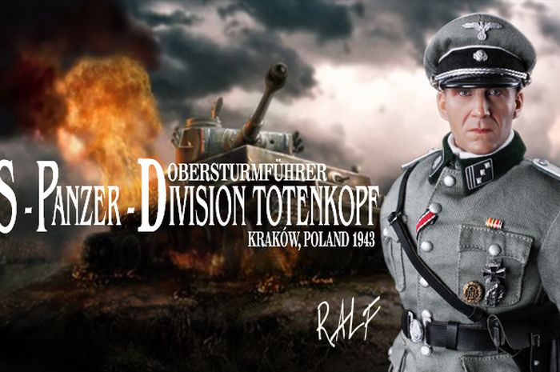

Gallery of Nazi Tank
Panzer Division Totenkopf
{kind=link}
Pasukan berani mati Nazi Jerman
Salah satu Divisi yang menjadi andalan Waffen SS adalah SS-Panzer Division Totenkopf atau juga dikenal sebagai 3. SS Panzergrenadier-Division Totenkopf serta 3.SS Panzer-Division Totenkopf. Divisi panser yang memakai lambang tengkorak (Totenkopf) ini dibentuk pada bulan Oktober 1939 dan para personil pasukannya mayoritas berasal dari penjaga kamp konsentrasi. Satuan yang kemudian bergabung dengan Totenkopf adalah 1st, 2nd, 3rd, Standarten dari unit SS-Totenkopfverbande.
Pasukan Division Totenkopf yang dalam misi tempurnya bertarung secara fanatik menggunakan persenjataan rampasan dari Chekoslovakia dan dikomandani oleh SS-Obergruppenfuhrer Theodor Eicke. Seperti divisi Waffen SS lainnya, Totenkopf terlibat pertempuran di berbagai medan dan para pasukannya dikenal sebagai prajurit brutal serta kejam. Salah satu kekejaman Totenkopf adalah aksi pembantaian terhadap 99 personil tentara Inggris dari Royal Norfolk Regiment yang sudah menyatakan menyerah. Pembantaian berlangsung di Le Paradis, Perancis, tempat markas 4th Kompanie I Abteilung yang saat itu dikomandani oleh SS-Oberstrumfuhrer Fritz Knochlein.
Sebagai pasukan tempur yang memakai lambang tengkorak dan itu berarti berani berperang sampai mati, prajurit Totenkopf membuktikan prinsip itu ketika menyerbu Rusia (Operation Barbarossa). Pada pertempuran yang berlangsung di kawasan Demjank Pocket pasukan (April 1941) pasukan Totenkopf yang terkepung mengalami kerugian besar karena lebih dari 50% prajuritnya tewas. Dengan pasukan yang tersisa, sekitar 120 orang, komandan Totenkopf SS-Hauptstrumfuhrer Erwin Mejerdress membangun kekuatan baru dan berhasil memecah kepungan musuh.
Pasukan Totenkopf yang terkepung pun berhasil bergabung dengan unit lainnya untuk selanjutnya melancarkan serangan balik. Namun, pertempuran di Demjank Pocket yang menjadi bukti bagi kehebatan dan sekaligus kefanatikan pasukan Totenkopf harus dibayar bayar mengingat 80% pasukannya gugur. Sisa pasukan Totenkopf kemudian ditarik ke medan perang Perancis (1942) dan mendapat suplai tank-tank baru serta nama divisi baru, 3.SS-Panzergrenadier-Division Totenkopf. Tugas divisi panser Totenkopf berlangsung hingga tahun 1943 dan setelah itu Totenkopf ditugaskan lagi ke front Eropa Timur dan menjadi bagian kekuatan Army Group South di bawah pimpinan Erich von Manstein.
Divisi Totenkopf kemudian bertempur di Rusia khususnya dalam perang tank di kawasan Kharkov dan Kursk. Dalam pertempuran sengit di Kharkov, Theodore Eicke, gugur akibat terhantam reruntuhan pesawat pengintai. Posisi Eicke kemudian digantikan oleh Hermann Pries. Tugas tempur Totenkopf di Eropa Timur ternyata merupakan tugas yang terakhir karena ketika pasukan Rusia berhasil melancarkan serangan balik dan memukul mundur pasukan Nazi Jerman hingga ke tanah air Jerman, divisi panser Totenkopf akhirnya berhasil dihancurkan oleh pasukan tank Rusia. Sisa-sisa para personil Totenkopf kemudian menjadi tawanan Rusia dan dijadikan pekerja paksa di Gulag. Banyak di antaranya yang tewas dan hanya segelintir yang bisa kembali lagi ke Jerman pasca PD II.
Source